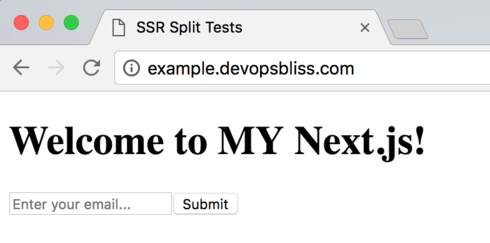
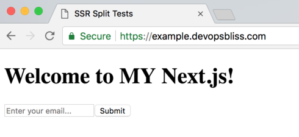

[GDD] DNS 09 December 2018
We left off with our Node application running in production!
🎉
We would like to serve this at our own domains though, of course.
Also, if you happened to try accessing the site over HTTPS, that did not work either.
In today’s lesson, the second to last lesson of GDD, we will update our DNS records, as well as enable HTTPS traffic.
The DNS portion is very easy:
Create a CNAME for every subdomain and root url you want to serve, and point it to the load balancer url of your cluster.
I’m going to deploy mine to a subdomain - example.devopsbliss.com
To do so, I created the following record in CloudFlare, a CNAME pointing to our loadbalancer url:

Right now, however, all CNAMES that are added will go to the same service, which is not quite what we want. It's ok for one service, but not many.
For example, the load balancer url still shows my application as well as the new subdomain.
We really only want to serve this content to example.devopsbliss.com, not anything else.
Also, we still need to enable HTTPS traffic.
Let’s start by allowing HTTPS traffic - open up `proxy.yml` in your local development environment.
We need to modify ports to have `443:443` as well as `80:80`.
proxy:
image: vfarcic/docker-flow-proxy:${TAG:-18.04.06-12}
ports:
- 80:80
- 443:443
Once we deploy this, HTTPS will be enabled for the proxy, which maps to Swarm's port 443.
Lastly, in stack.yml, we need to specify a “serviceDomain” so that the proxy will only serve traffic when it is coming from the correct domain.
Replace `com.df.servicePath` with `com.df.serviceDomain` like so:
labels:
- com.df.notify=true
- com.df.serviceDomain=$DOMAIN
- com.df.port=3000
Let’s commit and push. Then from the server we can pull our updates and deploy them.
Mine are pushed to the `stack/service-domain` branch.
Back in your server, connected by SSH, update your git repo by git pulling, or checking out the appropriate branch.
cd ~/dev/infrastructure
sh connect.sh
git fetch --all
git checkout stack/service-domain
(or git pull if you're using your own)
Then deploy the updated proxy, and stack files.
docker stack deploy -c proxy.yml proxy
We'll build and tag a new version and push it to our registry, so our production cluster can access it. (See previous lesson for refresher on that), and then deploy it again with the new VERSION.
VERSION=1.1 DOMAIN=example.devopsbliss.com docker stack deploy -c stack.yml split-test
https://example.devopsbliss.com/ still works, but going to the load balancer address, you should now receive a 503 error that nothing is configured at this route.
To verify, SSL should work in a few moments.

Congrats, if you've been following along, you are now running a containerized Next.js app on an orchestrator running on AWS.
Pretty cool, huh?
One more tomorrow, we haven't covered stateful services yet!
Patrick “Dangerous with DevOps” Scott